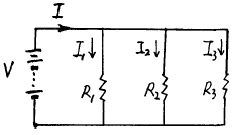
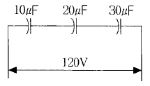
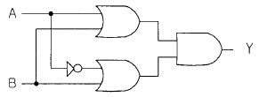
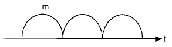
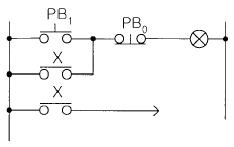
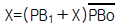
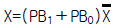

항로표지기사 (2003-08-10 기출문제)
1과목: 항로표지일반
1. 등명기 렌즈의 최소 두께는 얼마인가?
- 6㎜ 이상
- 8㎜ 이상
- 10㎜ 이상
- 12㎜ 이상
(정답률: 알수없음)

2. 현상변경에 속하지 않는 것은?
- 항로표지명의 변경
- 등질의 변경
- 광달거리의 변경
- 항로표지의 폐지
(정답률: 알수없음)
3. 어로 한계선의 경계선을 표시하거나 협수로에서 안전항로로 유도하기 위하여 설치하는 항로표지로 적합한 것은?
- 등 대
- 등 주
- 도 등
- 등 표
(정답률: 70%)
4. IALA 해상 부표식(B지역) 고립장해표지 두표의 도색은?
- 백색
- 흑색
- 홍색
- 황색
(정답률: 80%)
5. 백색 연속 초급섬광 또는 연속 급섬광의 등질을 사용하는 항로표지는?
- 동방위표지
- 북방위표지
- 서방위표지
- 남방위표지
(정답률: 알수없음)
6. 주기가 5초 또는 10초로서 1군이 2섬광의 군섬백광의 등질을 사용할 수 있는 항로표지는?
- 특수표지
- 특수항로표지
- 고립장해표지
- 방위표지
(정답률: 알수없음)
7. 항해용 해도 중 해안도의 축척으로 맞는 것은?
- 5 만분의 1 이하
- 5 만분의 1 이상
- 100 만분의 1 이하
- 400 만분의 1 이하
(정답률: 알수없음)
8. 연안항행 중 측정법이 쉽고 위치의 정밀도가 높아 가장 많이 이용되는 동시관측에 의한 선위결정방법으로 맞는 것은?
- 수평협각법
- 교차방위법
- 두 중시선에 의한 방법
- 물표의 방위와 거리에 의한 방법
(정답률: 100%)
9. 등질의 약기호 중 Iso 는 무엇인가?
- 장섬광
- 등명암광
- 단명암광
- 연속급섬광
(정답률: 알수없음)
10. 극심한 해상 및 기상조건의 영향을 거의 받지 않는 해역으로 맞는 것은?
- 외해
- 내해
- 준외해
- 급류해역
(정답률: 알수없음)
11. 구조물(등대)의 속빈 장방형 단면의 설계시 파력이 작용하는 단면 벽두께가 20㎝이상일 때 축방향 철근은 몇 본 이상으로 하여야 하는가?
- 10본
- 12본
- 14본
- 16본
(정답률: 알수없음)
12. 사설항로표지 소유자 또는 위탁관리업자가 관리하는 항로표지의 유실· 위치이동 현상에 변경이 있을 때 즉시 그 사실을 해양수산부장관에게 신고하지 않았을때 과태료는?
- 30만원
- 40만원
- 50만원
- 60만원
(정답률: 알수없음)
13. 등대의 등광이 해면을 비춰주는 부분을 무엇이라 하는가?
- 분호
- 명호
- 암호
- 여호
(정답률: 알수없음)
14. 항해통보의 기사에 의해 사용자가 직접 해도를 수기로 개보하는 것을 무엇이라 하는가?
- 소개정
- 개판
- 보도
- 재판
(정답률: 100%)
15. 항로표지 장비ㆍ용품의 검사 종류가 아닌 것은 ?
- 사용전 검사
- 정기검사
- 중간검사
- 변경검사
(정답률: 알수없음)
16. 항로표지법 제3조의2 규정에 의하여 항로표지를 설치· 관리하여야 하는 수역의 범위가 아닌 것은?
- 해상교통안전법 제45조의 규정에 의한 교통안전특정해역
- 해상교통안전법 제49조의2의 규정에 의한 유조선등의 안전항로
- 해상교통안전법 제50조의 규정에 의한 어선항로
- 개항질서법 제6조의 규정에 의한 정박구역
(정답률: 91%)
17. IALA해상부표식에 적용되는 항로표지는 어느 것인가?
- 등대
- 도표
- 대형부표
- 등표
(정답률: 알수없음)
18. 고립장해표지에 구형두표 2개를 설치할 때 구와 구의 간격은 그 직경의 약 몇%로 하여야 하는가?
- 20%
- 30%
- 40%
- 50%
(정답률: 알수없음)
19. 등색이나 광력이 바뀌지 않고 일정하게 빛을 내는 항로표지의 등질을 무엇이라 하는가?
- 부동등
- 명암등
- 섬광등
- 호광등
(정답률: 82%)
20. 지리학적 광달거리는 관측자의 눈높이를 어느 곳으로부터 몇 m일 때를 기준으로 한 것인가?
- 고조면상 3m
- 평균해면상 5m
- 저조면상 7m
- 기본수준면상 10m
(정답률: 알수없음)
2과목: 전기·전자기초
21. 동기발전기에서 병렬운전 때 특히 같게 할 필요가 없는 것은?
- 기전력
- 주파수
- 동기임피던스
- 전압의 위상
(정답률: 70%)
22. 열기전력에 관한 법칙이 아닌 것은?
- 파셴의 효과
- 제베크의 효과
- 중간 온도의 법칙
- 중간 금속의 법칙
(정답률: 82%)
23. P-N 반도체를 접합시킨 태양전지 발전에 대한 설명 중 옳지 않은 것은?
- 열에너지를 전기에너지로 변환한다.
- P형측에 +, N형측에 -전기를 발생시킨다.
- 높은전압, 대전류에 쓰기 위해서는 직렬, 병렬로 연결한다.
- 교류로 변환하기 위해서는 인버터가 필요하다.
(정답률: 알수없음)
24. 다음 중 2차 전지에 속하는 것은?
- 적층 전지
- 표준 전지
- 연 축전지
- 공기 전지
(정답률: 알수없음)
25. 절연저항계의 눈금은 어떻게 되어있는가?
- 2승 눈금
- 대각선 눈금
- 대수 눈금
- 연형 눈금
(정답률: 알수없음)
26. 무정전 전원장치(UPS)란 다음 중 어느 것인가?
- VVVF 인버터
- CVCF 인버터
- VVCF 인버터
- CVVF 인버터
(정답률: 알수없음)
27. 50[A]의 전류가 흐르고 있는 도선에 0.2초 동안 0.03[Wb]의 자속을 끊었다. 이때 일률은 얼마인가?
- 3[W]
- 20[W]
- 7.5[W]
- 5.5[W]
(정답률: 알수없음)
28. 직류 발전기 중 유도 기전력이 부하에 따라 심하게 변동되는 정전압 발전기라고 볼 수 없는 것은?
- 타여자 발전기
- 분권 발전기
- 직권 발전기
- 복권 발전기
(정답률: 알수없음)
29. 알칼리 축전지가 납축전지 보다 나쁜 점은?
- 수명
- 효율
- 내진동성
- 내고수전율
(정답률: 알수없음)
30. 교류발전기의 병렬운전조건이 아닌 것은?
- 전압이 같을 것
- 주파수가 같을 것
- 위상이 같을 것
- 전류가 같을 것
(정답률: 알수없음)
31. 직류기의 전기자 반작용을 보상하는데 효과가 가장 큰 것은?
- 균압환
- 탄소 브러쉬
- 보상권선
- 편자 작용
(정답률: 알수없음)
32. 그림의 병렬 접속 회로에서 R1=20[Ω], R2=10[Ω], R3=20[Ω], I=2[A]일 때, 전압은 몇[V]인가?

- 1
- 2
- 5
- 10
(정답률: 알수없음)
33. 100[V] 10[㎌], 100[V] 20[㎌], 100[V] 30[㎌]의 콘덴서가 직렬로 연결하여 직류 120[V]를 가하였다. 다음 설명 중 옳은 것은?

- 합성 정전용량은 60[㎌]이다.
- 30[㎌]의 콘덴서에 가장 높은 전압이 걸렸다.
- 3개의 콘덴서에 축적된 전하는 같다.
- 콘덴서는 과전압이 걸려 못쓰게 된다.
(정답률: 60%)
34. 단자 전압 200[V],1차 입력 10[kW],역률 75[%]의 3상 유도 전동기가 있다.전부하의 전류[A]는?
- 38.5
- 43.3
- 52.5
- 61.4
(정답률: 알수없음)
35. 그림과 같은 논리회로의 출력을 간단한 식으로 나타낸 것은?

- A
- B
- A
- B
(정답률: 75%)
36. 태양광선이나 방사선을 조사해서 기전력을 얻는 전지를 태양전지, 원자력 전지라고 하는데 이것은 다음 어느 부류에 속하는가?
- 1차전지
- 2차전지
- 연료전지
- 물리전지
(정답률: 알수없음)
37. 다음 소자 중에서 증폭작용을 하는 소자는?
- 트랜지스터
- 정류다이오드
- SCR
- TRIAC
(정답률: 알수없음)
38. 단상전파 정류한 직류전류의 실효치와 교류최대치와의 관계는?

- 1/√2 Im
- 2 Im
- 3 Im
- 1/√3 Im
(정답률: 알수없음)
39. 6[Ω]과 4[Ω]의 저항을 병렬로 접속하면 몇[Ω]인가?
- 24
- 2.4
- 10
- 1.5
(정답률: 알수없음)
40. 다음 그림은 무접점회로이다. 논리식으로 표기하면 어느 것인가?


- X=(PB1＋PB0)X
- X=(PB1＋X)PB0

(정답률: 알수없음)
3과목: 광파·음파표지
41. 항로표지 등화에 등질을 사용하는 이유로서 타당하지 않은 것은?
- 인근의 다른 항로표지 등광과의 오인을 피하기 위하여
- 해당하는 표지를 식별하기 위하여
- 항로표지 등광의 전원을 절약하기 위하여
- 항로표지의 용도를 표시하기 위하여
(정답률: 알수없음)
42. 대기온도 1℃ 증가에 따른 음속의 변화는?
- 2.42 ㎧ 증가
- 1.83 ㎧ 증가
- 0.61 ㎧ 증가
- 1.22 ㎧ 증가
(정답률: 알수없음)
43. IALA해상부표식(B지역)에 있어서 우현표지의 표체도색은?
- 홍색
- 녹색
- 황색
- 흑색
(정답률: 알수없음)
44. 광파표지의 기본 요건에 대한 설명으로 올바른 것은?
- 요구되는 범위내에서 충분히 볼 수 있어야 한다.
- 등명기 및 광원은 효율이 높은 것을 사용할 필요는 없다.
- 등광을 비슷하게 하여 항해자가 구별하기 용이하도록 하여야 한다.
- 항로표지의 용도 및 안정성은 만족해야 하지만 목적을 만족할 필요는 없다.
(정답률: 알수없음)
45. 국제적으로 신호 및 표지에 사용하는 색을 규정한 기구는?
- 국제미술협회
- 국제수로국
- 국제항로표지협회
- 국제조명위원회
(정답률: 알수없음)
46. 광원의 점멸에 의한 섬광의 섬광시간은 최대치에 대하여 몇 %의 광도를 가지는 시간의 길이를 취하는가?
- 30%
- 50%
- 70%
- 90%
(정답률: 50%)
47. 항로표지의 빛, 색채, 형상 등이 보이게 하는 방법 중 잘못된 것은?
- 시간적 또는 거리적으로 발견이 용이할 것
- 가시거리내에서 눈에 띠기 쉬울 것
- 가시거리내에서 배경 또는 타 등화와 분별하기 쉬울 것
- 주위 배경색과 비슷할 것
(정답률: 100%)
48. 빛이 보이지 않는 상태로부터, 마침 보이는 세기로 되는 경계의 곳에서의 값을 무엇이라 하는가?
- 역치
- 눈부심
- 광도
- 투과율
(정답률: 알수없음)
49. 음파표지의 종류에 속하지 않는 것은?
- 에어사이렌
- 다이야폰
- 전기폰
- 1분간격으로 발하는 폭발음 신호
(정답률: 90%)
50. 지리학적 광달거리를 결정하는 요소와 거리가 먼 것은?
- 표지등화 및 관측자의 수면상 안고
- 지구의 곡률
- 관측자 각막의 조도
- 대기굴절
(정답률: 알수없음)
51. 일정한 광도의 빛이 일정한 간격으로 발하며, 명간과 암간의 길이가 같은 등질은?
- 군명암광
- 등명암광
- 초급섬광
- 단명암광
(정답률: 알수없음)
52. 다음 중 고립장애표지의 설명으로 잘못 기술된 것은?
- 형상은 원주나 망대형이다.
- 두표는 흑구 2개이다.
- 도색은 흑색바탕에 하나의 넓은 홍색횡대이다.
- 등색은 황색이다.
(정답률: 알수없음)
53. 어떤 소리가 또 다른 소리를 들을 수 있는 능력을 감소시키는 현상은?
- 도플러효과
- 매스킹효과
- 호이겐스 원리
- 파스칼의 원리
(정답률: 알수없음)
54. 등명기에 설치하여 규정된 등질의 부호와 전구의 직류전압과 전류를 제어하고, 동작 중인 전구의 고장상태를 감시하고 점등시키는 장치는 다음 중 어느 것인가?
- 전구교환기
- 일광제어기
- 섬광기
- 지지금구
(정답률: 64%)
55. 등대설계시 중력식기초의 전도에 대한 안정성 검토와 직접 관계가 없는 것은?
- 기초저면에 있어서의 저항모멘트
- 기초저면에 있어서의 휨모멘트
- 기초의 외경
- 기초저면과 지반과의 마찰력
(정답률: 알수없음)
56. 다음 중 등대 기초형식의 선정에 있어서 고려되지 않는 것은?
- 지반의 강도
- 등탑의 규모
- 외관의 모양
- 시공성
(정답률: 70%)
57. 항로상 좌,우측 한계선을 따라 설치하여야 할 부표간의 평균거리가 틀린 것은?
- 외해 : 3마일 이내
- 준외해 : 1마일 내외
- 내해 : 0.5마일 정도
- 시계불량해역 : 0.2마일 정도
(정답률: 91%)
58. 등표의 특징이 아닌 것은?
- 강력한 최고파가 등표 전체에 충돌한다.
- 부분적인 재해에서는 항로표지로서의 기능을 상실하는 경우가 없다.
- 육상에 비하여 해상의 풍력이 강하기 때문에 등탑에서 받는 풍압이 아주 크다.
- 필요한 위치가 결정적이며, 위치선택의 자유가 없으므로 최악의 파랑을 받는다.
(정답률: 알수없음)
59. 다음 중 등질은 6초(Sec), 주기내에 섬광등(Flashing light)을 2차례 점등하며, 등고는 53m이며, 광달거리는 15마일이고, 레이콘을 설치한 항로표지의 도식으로 맞는 것은?
- Fl/2 6m 53m (15)M Racon
- Fl/2/6 53m (15)M Racon
- Fl(2) 6s 15M (53)m Racon
- Fl(2) 6s 53m (15)M Racon
(정답률: 알수없음)
60. 광파표지의 등질에는 여러 가지가 있는데 해당되지 않는 것은?
- 도등(leading light)
- 명암등(occulting light)
- 섬광등(flashing light)
- 부동등(fixed light)
(정답률: 93%)
4과목: 전파표지 및 시스템이용
61. 공전(Atmospheric)은 일반적으로 뇌방전에 따른 전압이다. 이러한 공전에 따른 잡음방해의 개선책이 아닌 것은?
- 안테나에 Notch Filter를 설치한다.
- 수신기의 실효대역폭을 넓게 한다.
- 송신전력을 크게 한다.
- 안테나의 지향성을 예민하게 한다.
(정답률: 90%)
62. GPS 수신기에 표시되어야 할 기술규격이 아닌 것은?
- 정확도 및 확률
- 보안 및 잼 저항능력
- 위성송신출력 강도
- 전파 간섭 환경
(정답률: 50%)
63. 다음 중 선박통항신호소(VTS)의 운영으로 기대할 수 있는 예방효과와 관계가 가장 먼 것은?
- 선박의 충돌
- 선박의 좌초
- 선박의 접촉
- 선박의 기관손상
(정답률: 91%)
64. 다음 중 등대 태양광 발전시스템의 전력제어장치의 구성요소와 관계가 가장 먼 것은?
- 전압조정장치
- 역전류방지 다이오드
- 중앙제어부
- 직·교류 변환장치
(정답률: 44%)
65. DGPS의 이용조건이 아닌 것은?
- 기준국과 이동국간의 거리가 최대 500Km 이내 이어야 한다.
- 기준국과 이동국간의 거리가 100~150Km 당 1m씩 오차가 증가한다.
- 기준국용 수신기는 정확히 측량된 지점에 설치해야 한다.
- 기준국과 이동국이 이용하는 위성이 서로 다르더라도 보정값을 적용할 수 있다.
(정답률: 알수없음)
66. GPS의 위성 고도 및 궤도 경사 각도를 올바르게 표시한 것은?
- 약 20000㎞, 55°
- 약 25000㎞, 53°
- 약 28000㎞, 60°
- 약 30000㎞, 51°
(정답률: 알수없음)
67. 우리나라 항로표지법 규정에 의한 전파표지가 아닌 것은?
- 레이더비콘
- 라디오비콘
- 로란
- 다이야폰
(정답률: 알수없음)
68. GPS 측위 정도의 의사거리 측정정도가 제일 작은 오차는?
- 전리층에서 전파의 전파지연
- 대류권에 의한 전파의 전파지연
- 의사거리 측정에 의한 잡음과 분해능
- 속도가 느린 선박
(정답률: 알수없음)
69. 다음 항법장치중 선위를 측정하는 방법이 다른 것은?
- Loran C
- Decca
- Racon
- Consol
(정답률: 알수없음)
70. 다음의 무선표지중 가장 이용범위가 넓은 것은?
- Loran
- Decca
- R.D.F
- Consol
(정답률: 알수없음)
71. 무선방위 측정기의 취급상 주의할 점이 아닌 것은?
- 기기청소나 내부점검을 할 경우 개폐기를 차단한다.
- 송신기 부하에서 결선하기 전에 변조하여야 한다.
- 정격휴즈를 사용한다.
- 전력증폭기의 코일탭과 고정축전기를 사용 주파수에 동조하여야 한다.
(정답률: 알수없음)
72. 전파와 밀접한 관련이 있는 전리층에 대한 다음의 설명 중 옳지 못한 것은?
- 전리층의 전자밀도는 야간보다 주간이 높다.
- 단파에 주로 이용되는 전리층은 F층이다.
- 전리층의 높이는 지역에 따른 영향을 받는다.
- 전리층의 높이는 A에서 F까지 6가지로 나눈다.
(정답률: 알수없음)
73. Loran-C의 송신용에 많이 사용되는 안테나는?
- Dipole 안테나
- T형 안테나
- 우산형 안테나
- 스팬 안테나
(정답률: 알수없음)
74. Loran-C 시스템에 대한 설명중 옳지 않는 것은?
- 먼저 발사하는 송신국을 주국이라 하고 다른 송신국을 종국이라 한다.
- 송신국의 배치는 하나의 주국에 최소한 2개의 종국을 가지며 3개 또는 4개의 종국을 갖기도 한다.
- 모든 송신국은 서로 다른 주파수를 발사하고, 각 종국들 사이의 간섭을 막기 위하여 펄스군의 반복주기를 같게 하고 있다.
- 로란-C에 할당된 주파수 범위는 90-110KHz이며 송신펄스 에너지의 99%이상이 20KHz 대역폭 범위로 한정되어 있다.
(정답률: 알수없음)
75. GPS 시스템의 개발초기에는 몇 개의 궤도면에 몇 개의 위성으로 구성되었는가?
- 3개 궤도면에 7개씩 21개의 위성으로 구성
- 2개 궤도면에 8개씩 16개의 위성으로 구성
- 3개 궤도면에 8개씩 24개의 위성으로 구성
- 3개 궤도면에 9개씩 27개의 위성으로 구성
(정답률: 알수없음)
76. 무선방향 신호국의 종류중 "선박으로부터 의뢰를 받아 그 선박의 발신전파의 방향을 측정해서 전파의 방위를 다시 알려주는 무선국"은 무엇인가?
- 무선방향 탐지국
- 무지향성 무선표지국
- 지향성 회전식 무선표지국
- 지향성 무선표지국
(정답률: 알수없음)
77. Loran-C의 주국에서 발사되는 펄스군은 몇 개로 구성되는가?
- 7개
- 8개
- 9개
- 10개
(정답률: 알수없음)
78. 전파표지 중 현재 우리나라는 7개의 국을 운영하고 있으며, 방위각을 이용한 측정방식과 관계 깊은 시스템은 무엇인가?
- Loran-C
- 라디오비콘
- GPS
- GLONASS
(정답률: 17%)
79. 다음 중, 자동 레이더 플로팅장치인 ARPA 장치의 주요 기능으로 맞지 않는 것은?
- 임의의 시간 간격을 정하여 자선 및 각 물표들의 지나온 항적을 화면상에 나타낼 수 있다.
- 가변 거리 마크를 이용하여 선택한 물표는 자동으로 플로팅 되어 물표의 정보를 알 수 있게 한다.
- 임의의 시간간격을 정하여 자선 및 각 물표들의 예정항로를 벡터로 표시한다.
- ARPA는 진운동 지시방식으로만 작동한다.
(정답률: 알수없음)
80. 레이더 비콘의 사용 목적으로 적합하지 않은 것은?
- 눈에 잘 띠지 않는 해안선에 있는 위치의 식별과 거리 측정
- 물표의 종류 식별
- 육지초인(표지)의 식별
- 교량하의 가항폭 표시용으로 사용
(정답률: 알수없음)